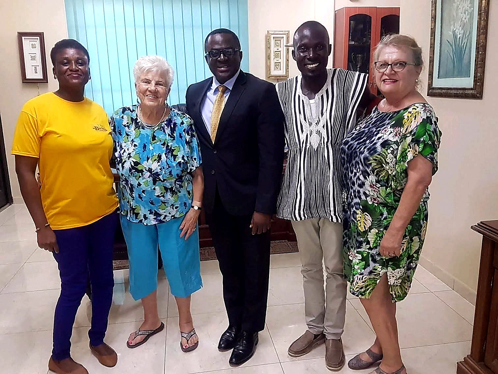

A connected approach to waste management.
Our solutions address the collection, recovery and responsible management of different waste streams, alongside public sanitation and community engagement.

Solid Waste Collection
Door-to-door and communal-container services for residential and commercial clients, including collection arrangements under public-private partnership agreements.
- Residential and commercial collection
- Drain and beach cleansing
- Management and cleaning of public spaces

Source Segregation & Recycling
Kairos describes an incentive-based source segregation programme that encourages households and organisations to separate recyclable materials before collection.
- Sorting of paper and plastics
- Pre-processing for recycling-industry feedstock
- Incentives that encourage recycling behaviour
Green Products
Kairos is seeking funding to operate multiple composting and recycling plants that can turn recoverable waste into useful green products.
- Compost products to enrich agricultural land
- Support for food security in farming communities in Bawjaise
- Waste-to-resource opportunities

Special Projects & Consultancy
Development of sustainable circular business models and consultancy services, including projects with international funding organisations and the Environmental Protection Agency on waste valorisation and public sensitisation.
- Circular-economy business models
- Partnership-based special projects
- Public sensitisation and outreach programmes
Public Toilet Management
Professional operation and management of public water closet (WC) facilities, with an emphasis on cleanliness, hygiene and reliable sanitation standards for communities.
- Public WC facility operations
- Hygiene and sanitation maintenance
- Community public-health support